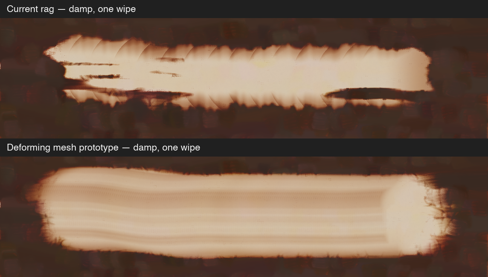

Local experiment, not a release. Same dark paint and wipe as the previous comparison. The prototype uses a persistent 19 × 19 cloth mesh. Pressure lowers the grip; distance constraints resist stretch and bending; contact friction displaces the cloth as it moves. Refolding starts a new shape.

The mesh runs on a flat support plane. The existing paint model still handles linen height, solvent reach and lifting. Stiffness, friction and grip are estimates. There is no cloth self-collision or persistent dirty-spot map. This first solver uses PBD, not XPBD.
Original PNGs: dry, one wipe · damp, one wipe · dry, two wipes · damp, two wipes · untouched
Focused paint tests: 5 passed, 0 failed, 1 ignored. Paint conservation, second-wipe clearing, evaporation, dry/damp lift, pressure/refolding and cured-paint protection passed. All 6 focused Lua/session rag tests passed, including failed-chunk rollback. Full release checks have not run. The final render command, including its incremental build, completed in 10.0 seconds.
The tested experiment is saved as an unapplied patch. The shipping source has been restored. Cloth solver source · Render source · Paint test log · Session test log · Build/render timing.